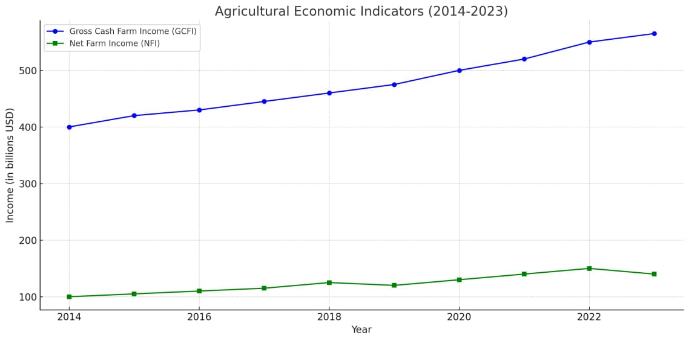

Welcome to Agriculture
In India agriculture plays main role in Economy.
Agriculture is a key part of India's economy, employing 60% of the country's workforce and contributing to 17% of its GDP. India is a global agricultural leader, producing the world's largest amount of milk, pulses, and spices. It also has the largest area under wheat, rice, and cotton, and the world's largest cattle herd.
Here are some facts about agriculture in India:
Challenges
Despite India's agricultural success, productivity remains a challenge. Smallholder farmers face challenges such as water shortages, climate change, and fragmented land holdings.
Government initiatives

The government has introduced reforms to land distribution, water management, and food distribution systems to increase productivity. The government is also building an agtech ecosystem to support farmers.
Sustainable agriculture
Sustainable agriculture is important for rural development. This includes using environmentally sustainable technologies like soil conservation, biodiversity protection, and sustainable natural resource management
Crops by season :
Name |
month |
season |
crop |
|
Rabi
|
Nov-Mar |
Winter |
wheat , types of grams , Mustard...... |
| Zaid |
mar-june |
Summer |
Mangoes , Types of Vegetables and Fruits....... |
| Kharif |
June-Oct |
Moonsoon |
Rice , Cotton , Maize............ |
Types of Crops
#In India we have differnt types of crops in diffrent regions and Culltivate based on season in everywhere in India
here some of the crops are ......
Agricultural Schemes
Pradhan Mantri Fasal Bima Yojana (PMFBY)
A government-sponsored crop insurance scheme that aims to protect farmers against crop loss due to natural calamities.
- Risk cover for crops
- Premium subsidies for farmers
- Financial support for crop failure
Soil Health Card Scheme
This scheme aims to promote soil testing and balanced nutrient use by providing soil health cards to farmers.
- Soil testing for nutrients
- Recommendations for balanced fertilizer use
- Increased crop productivity
Benefits of Agriculture Schemes
Agricultural schemes provide various benefits to farmers, such as:
- Financial stability and risk management
- Improved crop productivity
- Enhanced soil health and sustainability
- Support for advanced farming practices
Cotton Crop

Cotton is grown on a variety of soils ranging from well drained deep alluvial soils in the north to black clayey soils of varying depth in central region and in black and mixed black and red soils in south zone. Cotton is semi-tolerant to salinity and sensitive to water logging and thus prefers well drained soils.Cotton is one of the most important fiber and cash crop of India and plays a
dominant role in the industrial and agricultural economy of the country. It provides the
basic raw material (cotton fibre) to cotton textile industry. Cotton in India provides direct
livelihood to 6 million farmers and about 40 -50 million people are employed in cotton
trade and its processing.
In India, there are ten major cotton growing states which are divided into three
zones, viz. north zone, central zone and south zone. North zone consists of Punjab,
Haryana, and Rajasthan. Central zone includes Madhya Pradesh, Maharashtra and Gujarat.
South zone comprises Andhra Pradesh, Telangana, Karnataka and Tamil Nadu. Besides
these ten States, cotton cultivation has gained momentum in the Eastern State of Orissa.
Cotton is also cultivated in small areas of non-traditional States such as Uttar Pradesh,
West Bengal & Tripura.
Wheat Crop

Wheat is the second most important cereal crop. It is the main food crop in the north and north-western parts of the country. India is the second-largest producer of wheat, accounting for about 14% of the world's total production. India produces approximately 110 MT of wheat each year.
Wheat is the second most important food crop in the country after rice both in area and production. About 14% of the total cropped area in the country is under wheat cultivation. India accounts fro about 12% of the total wheat production of world.Wheat is grown in a variety of soils of India. Soils with a clay loam or loam texture, good structure and moderate water holding capacity are ideal for wheat cultivation. Care should be taken to avoid very porous and excessively drained oils. Soil should be neutral in its reaction. Heavy soil with good drainage are suitable for wheat cultivation under dry conditions. These soils absorb and retain rain water well
Rice Crop

Rice is one of the most important staple crops in the world, providing sustenance for over half of the global population. The history of rice cultivation dates back over 8,000 years, originating in ancient China and spreading across Asia, where it became a key element of the diet and culture. Today, rice is produced in over 100 countries, with major producers being China, India, Indonesia, Bangladesh, Vietnam, and Thailand. It thrives best in warm, humid climates, typically found in tropical and subtropical regions, and is particularly suited to areas that can support flooded paddies, which help control weeds and pests naturally.
From an agricultural perspective, rice continues to evolve with advances in agricultural science. Researchers are exploring ways to enhance rice nutrition, such as by biofortifying rice with additional nutrients like zinc, iron, and beta-carotene. These innovations aim to combat malnutrition in regions heavily dependent on rice as a primary food source. Additionally, genetic research is leading to the development of new varieties that are more resilient to pests, diseases, and extreme weather conditions, ensuring that rice production can meet the demands of a growing global populatio
mazie Crop

Maize, commonly known as corn, is a staple cereal crop with a rich history dating back over 10,000 years to its origins in central Mexico. As one of the world's most important food sources, maize has become integral to human diets, animal feed, and various industrial applications. Maize plants grow as tall, annual grasses with broad leaves and produce kernels on cobs, which are consumed in various forms like fresh corn, popcorn, cornmeal, and corn oil. This cr, making it suitable for a range of climates, from temperate to tropical. As a significant source of carbohydrates, maize contributes to the caloric intake of millions worldwide, especially in countries such as the United States, Brazil, and China, which are the largest maize producers. Furthermore, maize is valued not only for direct consumption but also as a crucial component in animal feed, biofuel production, and as a raw material in the pharmaceutical and cosmetic industries. In recent years, advancements in agricultural technology have led to the development of high-yield and pest-resistant maize varieties, helping farmers increase productivity and reduce the need for chemical inputs. However, maize farming also faces challenges, including soil depletion, climate change, and pest attacks, which necessitate ongoing research and innovation to ensure sustainable cultivation practices. This versatile crop continues to be a cornerstone of agricultural economies worldwide, shaping diets, economies, and societies with its diverse uses and adaptability.
Agricultural Economy
Explore agricultural economies across continents, key export products, and emerging trends in global trade.
Agriculture economies Indicators :(2014-2023)

Agriculture is a vital part of India's economy, providing employment for a large portion of the population and contributing a significant share to the country's GDP:
Employment: Agriculture employs around half of India's workforce.
GDP : Agriculture contributes around 18% to India's GDP.
Food production : India is a major producer of many agricultural products, including milk, pulses, wheat, rice, groundnuts, fruits, vegetables, sugarcane, tea, jute, cotton, and tobacco leaves.
Exports : India's agriculture exports reached a record high of $50 billion in 2021-22.
Aquaculture: India is a leading aquaculture exporter in the APAC region
GDP of Agriculture :
Year |
Agricultural share |
agriculture (INR Crore) |
|
2012-13
|
~17.9% |
15,72,408 |
| 2013-14 |
~18.1% |
17,14,424 |
| 2014-15 |
~17.9% |
18,53,554 |
2015-16
|
~17.8% |
19,95,828 |
| 2016-17 |
~17.7% |
21,55,586 |
| 2017-18 |
~17.6% |
23,53,689 |
2018-19
|
~17.6% |
26,14,811 |
| 2019-20 |
~18.4% |
28,92,444 |
| 2020-2021 |
~19.9% |
31,57,385 |
| 2020-22 |
~18.8% |
34,97,267 |
| 2022-2023 |
~18.2% |
35,55,897 |
Agriculture in Foreign countries :
In other countries also Agriculture is most sources of their GDP like India ,
Agriculture is one of the largest and most significant industries in the world, so taking measures to increase production levels is key for the security and health of a country's population. Of the major cereal and vegetable crops, the United States, China, India, and Russia are the top producers.
Cultivation in Foreign countries ::
Mention below Table About GDP of agriculture sector in top 5 countries (2023) ::
| RANK |
Country |
Total GDP(USD Billion) |
Agriculture(% of GDP) |
Agriculture GDP (USD Billion) |
| 1 |
China |
23,210 |
7.9 |
1,833.6 |
| 2 |
India |
9,474 |
15.4 |
1,459 |
| 3 |
Indonesia |
3,250 |
13.7 |
445.3 |
| 4 |
US |
19,490 |
0.9 |
175.4 |
5 |
Pakistan |
1,121 |
24.4 |
258.9 |
Regional Crops
Foreign Agricultural Practices
Discover diverse agricultural practices in countries worldwide.
Agriculture is a major industry in many countries, and there are a number of differences in agricultural practices and technologies across the world::
Agricultural practices :: In developed countries, advanced agricultural practices and technologies are used to increase productivity and crop yields. These include precision farming, which uses data from GPS, sensors, and drones to optimize resource allocation. In contrast, many regions in India still use traditional farming methods.
Genetically modified organisms (GMOs) ::
Some countries use GMOs to increase crop resistance, combat pests, and increase yield. However, in India, there is resistance to GMOs due to concerns about environmental impact, biodiversity loss, and potential health risks.
Here some countries with thier most famous Crops ::
Access to financial support ::
In many countries, farmers have access to credit, insurance, and subsidies through government support and robust financial systems. This allows them to invest in modern technologies and sustainable practices.
Top agricultural producers ::
The top producers of major cereal and vegetable crops include the United States, China, India, and Russia. China is the world's largest producer of many agricultural products, including rice, wheat, corn, potatoes, soybeans, cotton, and tobacco.
Agricultural exports ::
The United States is the world's top exporter of agricultural products
Some State-Wise Crops in India
Check the crops grown across various states
Crop wise famous State ::
Crop Name |
States (by whose Cultivate's) |
| Rice |
AP , WB , UP |
Wheat |
UP , PB , HR |
| Bajra |
RJ , UP , GJ |
| Maize |
KR , MP , BR |
| pulses |
MP , UP , AP |
| Cotton |
GJ , MR , PB |
AP :: Andhra Pradesh
WB :: West Bengal
UP :: Uttar Pradesh
PB :: Punjab
HR :: Haryana
RJ :: Rajasthan
KR :: Karnataka
MP :: Madhya Pradesh
Any Problem/issues : Contact us by your details...